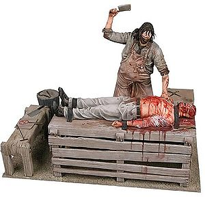
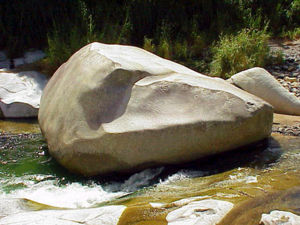

Black and White 2
 De: La Frikipedia, la enciclopedia extremadamente seria.
De: La Frikipedia, la enciclopedia extremadamente seria.
De la serie Videojuegos:
Black and White 2

Esta es la imagen que puse porque
me dió fiaca no encontré otra.
| Desarrollado por:
|
CabezaLión.inc
|
| Distribuido por:
|
Mininova.org
|
| Diseñado por:
|
Japoneses (no se crean que todo lo hacen los yankis porque si fuera así...)
|
| Motor
|
80 tubos proporcionados con aceite del bueno.
|
| Género(s)
|
Abuso de poder divino y tomada de pueblos por la fuerza/agradar a tus enemigos con una ciudad justa para tener más seguidores (en el siguiente nivel hacen un gran ejército, les dan caza y los pasan por el cuchillo...)
|
| Fecha de lanzamiento:
|
para hacerlo hay que mover rápidamente la mano... ¡¡¡y lanzaaarlo por el aire!!!
|
| Modos de juego:
|
Tirar rocas sobre el poblado ajeno.
|
| Requisitos:
|
Ser friki y creer que el Warcraft es el lado del mal y este otro es el lado del bien.
|
| Disponible en:
|
{{{disponible_en}}}
|
| Formatos:
|
Dvd
|
| Edades:
|
lamentablemente de 6 a 12 años (edades en que las criaturas son agradables).
|
| Puntuaciones:
|
Nominado 20 veces al juego más que estratégico mejor en gráficos, entorno e interacción malvada/buena. Obtuvo 50 premios por la mejor interacción de crecimiento y educación de criaturas.
|
Es un juego para nerds y se recomienda jugarlo en una computadora Intel Core-i 23092309.
«Es un juego de estrategia para bebés, prefiero jugar al Age of Empires»
~ Garrota hablando de Black and White 2
«Mejoró todas mis ventas...»
~ Puto y desalmao sin vergüenza encargado del Scream hablando de lo lindo que es el juego
«¡Puta madre, estan muy buenos los gráficos!»
~ Bill Gates al descubrir y envidiar al impresionante Black and White 2
«¡Joder, me ralentiza bastante!»
~ n00b jugando al Black and White 2 con máximos detalles
«Hago muchos procreadores»
~ Prostituta/Travesti hablando de lo que hace en Black and White 2 o tal vez en su vida diaria
«¿No era ése donde tenía que obedecer al Diablito?»
~ George Bush y su admirable conocimiento sobre el juego
Black and White 2 es un Parque Rivadavia u otras instalaciones secretas para conseguirlo, tales como thepiratebay.org, mininova, etc.
Lo impresionante de este juego es que no es como las mierdas graficas Age of Empires ni nada de eso. En vez de solo hacer ejercitos de cualquier cosa (elefantes, autos rally, etc.), puedes también ponerte a trabajar y generar una ciudad impresionante para convencer a tus vecinos para que sean tus aliados o simplemente para molestar a los n00b.
Argumento
 Foso de Tortura (dedicado a los masoquistas).
Un Dios se creó a base de rendimiento de culto de un anónimo que apenas si tiene derecho a hacer cosas adentro de un circulito verde , el cual debe aprender a serlo con ayuda de su consciencia (equipo formado por el Diablito y el Santurro). Luego de aprender como moverse y elegir una mascota, visitan la hermosa capital Griega con cantidad de gente para rendirse culto, enterándose que estan bajo el ataque de un ejército azteca inmenso (entre 1200 y 4000). Y por si fuera poco, tiran flechas de fuego y aplastan a los aldeanos "-¡Venganza!-". Luego aplastan a ciertos soldados aztecas. Más tarde deben poner gente descontrolada en los portales para que desaparezcan sean trasladados a un lugar seguro. Pero sin venir a cuento, un enorme peazo (criatura) empieza a hacer un extraño ritual y comienza a crecer un volcán, luego otro y no quedó ningún sobreviviente.

Si la criatura se la echa encima, deberás limpiarlo
Resulta que los aldeanos son trasladados a la Tierra Escandinava, donde deben recuperar la aldea y conseguir más seguidores. Luego deben viajar a otra Tierra Escandinava donde viven unos nórdicos histéricos que ocupan el lugar. El objetivo es matar a todos y ocupar el poblado enemigo por la fuerza hacer que se les unan. Por suerte lo consiguen. En el siguiente nivel deben enfrentarse a unos chinacos que se hacen llamar Los Japoneses o Ponjas. Estos ijosputa tienen maravillas para hacernos la vida imposible y tenernos los cojones por el suelo.
Luego se tienen que enfrentar a más civilizaciones enemigas a lo largo del juego hasta enfrentar a los aztecas en el último nivel. Que es muy, pero muy difícil. Son los ijostrillóndelagranputa del juego.
Se pueden hacer ejércitos así de guays:).

El Black & White 2 se ve mucho mejor y con antialiasing. Los que vieron esa imagen sufrieron de pixelopia.
Ejércitos
Se puede crear ejércitos de distintas clases. He aquí las que se conocen. A medida que van luchando estos ya se la saben y pelean cada vez mejor. Los ejércitos se construyen con las armerías colocando una bandera en cualquier lugar, abriendo una carpa de reclutamiento.
- Espadachines: Soldados griegos que atacan de cerca. CUIDADO con los ataques a distancia.
- Arqueros: Soldados griegos que atacan a distancia y son más fáciles de aumentar la experiencia en combate a menos que se encuentren un adversario del mismo nivel.
- Máquinas de asedio (catapultas): Puedes fabricarlas en una Casa de Máquinas de Asedio que tu construyas. El problema es que los putos aldeanos son muy perezosos y no quieren trabajar. Sii... ¡nadie puede vencer a una maquina de guerra bien engrasada!
Si le das un baño, tu criatura quedará así.
El maltrato de las criaturas se retracta en esto.
Criaturas
Las criaturas que tienes para elegir son cuatro. Sin embargo, en la expansión War of the Gods es posible seleccionar dos más. En un principio son bebés y debiluchos, pero depende de para qué los uses ellos crecerán con ése estilo de uso: pueden ser juguetonas... o pueden convertirse en las máquinas disciplinadas de conflicto y guerra definitivas...je je. Cualquiera de las criaturas puede convertirse en estas cosas. También sirven para arrojar y comer a tus propios aldeanos.
- Vaca: Al principio es un ternerito, pero va creciendo de a poco con su educación, como todas las criaturas. Sólo que ésta es capaz de desempeñarse en cualquier cosa que aprenda y haga.
- Lobo: El lobo feroz siempre será fiel al intentar atacar al enemigo.
- León: Es muy rápido y terrible, no demora en llegar a la escena de guerra.
- Mono: El mono es la mejor máquina de guerra, pero muy desobediente.
Discípulos
Los aldeanos pueden convertirse en discípulos con sólo soltarlos en cualquier lugar (si tomas un aldeano y lo sueltas sobre una casa en construcción será Discípulo Constructor, si lo sueltas en un árbol será Discípulo Leñador y si lo sueltas en una caca se la comeráNOOOOOOXDXDXDDDDDD).
Edificios
Estos son los edificios que puedes colocar. Algunos requieren ser seleccinados en el Menú Construcción.
- Almacén: Este es el edificio importante donde pones el grano, los pedruzcos y la madera. NOTA: el grano es lo único que comen tus aldeanos.
- Altar: Los Altares son lugares donde los aldeanos te rinden culto y te alaben (para que les tengas piedad y dejes de aplastarlos con rocas). De esa manera te sube el maná y podrás hacer magia.
- Armería: Las armerías te sirven para hacer ejércitos, agarrando la bandera de reclutamiento y soltándola para generar una carpa.
- Armería de Espadachines: En éstas se pueden hacer soldados griegos de pelea a corta distancia.
- Armería de Arqueros: Con ésta construyes arqueros. Punto.
- Campo: Los campos los puedes construir seleccionándolos en el menú construcción. En éstos puedes poner discípulos granjeros para que recojan el grano
mientras tú te rascas, aunque tú también puedes recojgerlo.
- Cementerio: Los
Scementerios son lugares donde tu gente Descansa En Paz (D.E.P., depósitos de cuerpos).
- Foso de Tortura: Sirve para que tus aldeanos se diviertan siendo torturados. Fomenta el masokismo.
- Muros: Los muros son vitales para la defensa de tu pueblo. Se seleccionan en el Menú Construcción. Lo divertido es que puedes apostar arqueros sobre éstos y molestar el enemigo bastante (porque no son capaces de alcanzarlos escalando el muro, esa es la joda... xD)
- Muralla Común: Muro que resiste los ataques de espadachines y arqueros pero una fuerte criatura/maquinaria de asedio puede derribarlo.
- Muralla Fortificada: Muro bastante guay que resiste los ataques de Catapultas y Criaturas pero ataques a gran escala (como volcanes, terremotos, tsunamis, etc.) pueden romperlo sin problemas.
- Sanitarios: Sirven para que tus aldeanos dejen el hábito de ser sucios y cochinos para asearse (ass-earse XD) en los baños.
- Universidad: Es necesario para evitar que tu gente sea un enorme y pesao amontonamiento de borricos.
Menús
Desde los menús puedes saber sobre tu pueblo e ir de compras.
 Debes enseñarle a la vaca que no vuelva a comer rocas...

Devastadores efectos de una maravilla.
Milagros
Se puede lanzar milagros ya sea de golpe, o de a poco pero en fin se pueden lanzar. Se necesita construir un altar para poder utilizarlos (con rendimiento de culto de aldeanos aunque también puedes soltarlos justo en el altar, aunque bueno, no volverás a verlos...). Cuando los aldeanos hacen estupideces y danzan en tu honor, hacen que crezca el fuego azul llamado maná. Cuando estás apurado puedes sacrificar aldeanos, aldeanas, niños, tu Criatura y tú mismo.
- Milagro de Hagua: El milagro de hagua te sirve para hacer crecer el campo (le compras uno de éstos a la criatura, lo pones recoger grano y tu pueblo será más grande).
- Milagro de Escudo: Permite proteger cualquier cosa (hasta esos niños que
nunca crecen) de los ataques enemigos.
- Milagro de Fuego: Es un milagro poderoso
y el primero que debes comprar que sirve para arrojar fuego.
- Milagro de Trueno: Permite tirar truenos (¿Tengo que mencionarlo?).
- Milagro de meteoritos: En realidad, tendría que ser efecto de una maravilla, pero para ahorrarse el esfuerzo de diseñar otra, los desarrolladores lo hicieron milagro.
Maravillas
Las maravillas son enormes edificios capaces de generar colosales devastaciones al enemigo.
- Maravilla de la Sirena: La Maravilla de la Sirena es
preferentemente construída por marikas la que permite seducir al enemigo para que se unan al pueblo.
- Maravilla del Huracán: Es usada por los malditos ponjas para volar tus casas.
- Maravilla del Terremoto: Sirve para abrir la tierraXD y romper el suelo.
- Maravilla del Volcán: Te cuesta dos ojos de la cara, pero es una de las pocas alternativas para vencer a los aztecas.
- Maravilla del Tsunami: Provoca un tsunami.
|
|
 Shooter Shooter
 Terror Terror
 Velocidad Velocidad
 Rol Rol
 Estrategia Estrategia
 Aventuras Aventuras
 Fight! Fight!
 Clásicos Clásicos
 Deportivos Deportivos
 Aventura gráfica Aventura gráfica
 Novela visual Novela visual
 Personajes de videojuegos Personajes de videojuegos
|
Autor(es):
- Frikiman
- Marcosantinos
- Magiclopez
- Gororo
- Generibot
- Poke-Dex
Frikipedia 2005-2016, Licencia
GFDL 1.2 - Extraído por FrikiLeaks